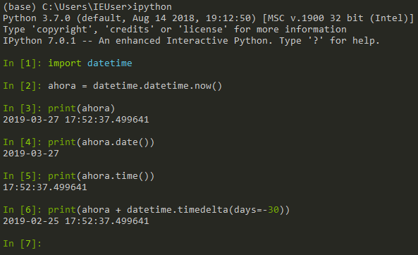
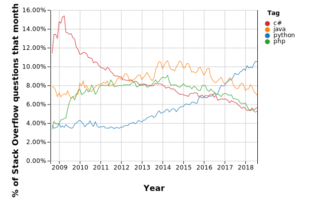
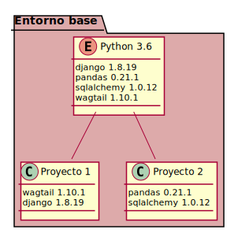
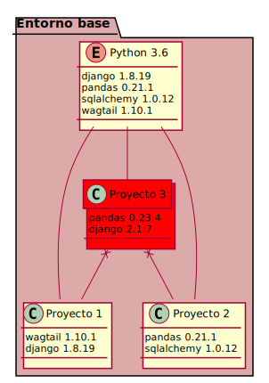
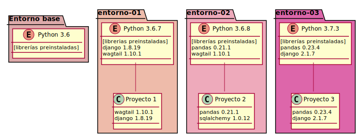
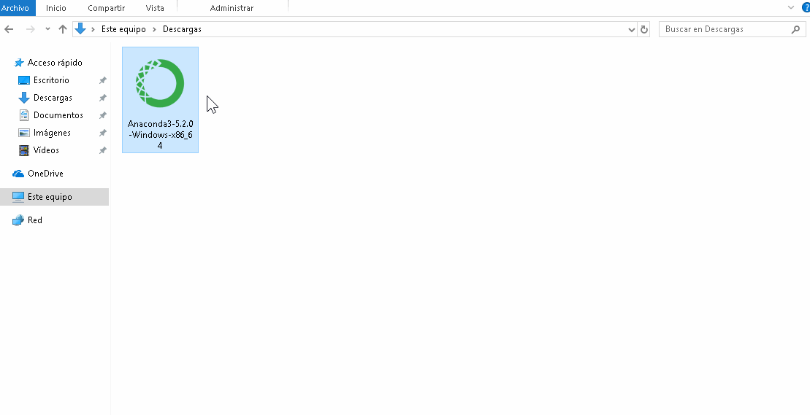
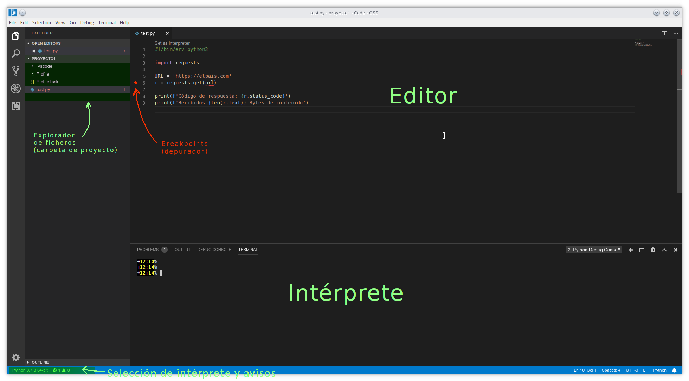
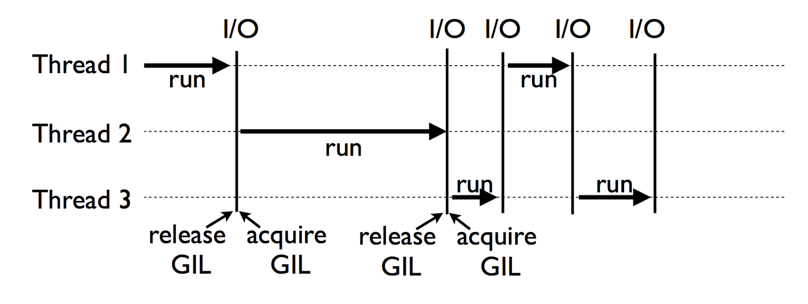

Python para Análisis de datos: Introducción
Sesión 1
Jesús Fernández (fernandez.cuesta@gmail.com)
1 Abril 2019
Introducción a Python
Introducción a Python

Creado en 1990 por Guido van Rossum

Definición y evolución del lenguaje recogido en PEPs (Python Enhancement Proposals)
- Énfasis en la productividad y legibilidad del código (PEP20)
- Beautiful is better than ugly
- Explicit is better than implicit
- Simple is better than complex
- Complex is better than complicated
- Readability counts
- …
- +reusable, +fácil mantener
Ejemplo:
import math
número = input("Introduce un número [0, 1, 2, ...]: ")
número = int(número) # convierte texto a número entero
print('El factorial de', número, 'es', math.factorial(número))
# de forma alternativa:
# print('El factorial de %s es %s' % (número, math.factorial(número)))
# print('El factorial de {} es {}'.format(número, math.factorial(número)))
# print(f'El factorial de {número} es {math.factorial(número)}')- Actualmente dos versiones principales activas:
- Python 2.7 (soporte hasta 1/1/2020)
- Python 3.x (3.6, 3.7) ←
python x.y.z
x: versión principal, incompatibles entre sí [2, 3]
y: versión secundaria, normalmente compatibles
z: versión menor (errores y seguridad)
Línea temporal de versiones, en rojo: versión obsoleta
- Lenguaje de alto nivel, interpretado, orientado a objetos
- Alta productividad, no compilado
- Gran cantidad de librerías incorporadas (batteries included)
- + librerías externas (>1M): Python Package Index (PyPI)
Alto nivel
- Sencillo y comprensible
- Fácil de aprender
- Abstracción de datos (no es necesario declarar variables)
- Menos líneas de código
Interfaces simples (pythonic)
Código ejemplo en C++
#include <stdio.h>
#include <stdlib.h>
#include <unistd.h>
#include <sys/types.h>
#include <sys/socket.h>
#include <netinet/in.h>
#include <netdb.h>
#include <arpa/inet.h>
#include <err.h>
char response[] = "HTTP/1.1 200 OK\r\n"
"Content-Type: text/html; charset=UTF-8\r\n\r\n"
"Hello, world!\r\n";
int main()
{
int one = 1, client_fd;
struct sockaddr_in svr_addr, cli_addr;
socklen_t sin_len = sizeof(cli_addr);
int sock = socket(AF_INET, SOCK_STREAM, 0);
if (sock < 0)
err(1, "can't open socket");
setsockopt(sock, SOL_SOCKET, SO_REUSEADDR, &one, sizeof(int));
int port = 8080;
svr_addr.sin_family = AF_INET;
svr_addr.sin_addr.s_addr = INADDR_ANY;
svr_addr.sin_port = htons(port);
if (bind(sock, (struct sockaddr *) &svr_addr, sizeof(svr_addr)) == -1) {
close(sock);
err(1, "Can't bind");
}
listen(sock, 5);
while (1) {
client_fd = accept(sock, (struct sockaddr *) &cli_addr, &sin_len);
if (client_fd == -1) {
perror("Can't accept");
continue;
}
write(client_fd, response, sizeof(response) - 1); /*-1:'\0'*/
close(client_fd);
}
}Equivalente python
Interpretado
No es necesario compilar…
… pero necesitamos tener instalado un intérprete

python.exe


Interpretado
- Compatible (en general) entre distintos sistemas operativos y arquitecturas:
- Linux
- MacOS
- Windows
- otros (AIX, AS/400, z/OS, OpenVMS, ARM, …)
- Arduino/Raspberry PI (IoT)
- Depuración de errores desde intérprete
- Gestión automática de memoria
Práctica
intérprete python
Anaconda Prompt >
python(>ipython)
Diferentes paradigmas de programación
- Orientado a objetos
- Procedural
- Imperativo
- Funcional (<100%)
Python es usado en
Data Science


Machine Learning


Desarrollo Web
(p.e. pinterest, instagram, linkedin, …)


Desarrollo software (scripts, prototipos, …)
como “pegamento” entre componentes escritos en otros lenguajes


Automatización de procesos software

Automatización de procesos software


Python como lenguaje de programación
The 2018 Top Programming Languages, IEEE

gran soporte en foros, comunidades, conferencias, …

Worldwide, Python is the most popular language, Python grew the most in the last 5 years (PYPL)

fuente: stackoverflow
R: muy enfocado en análisis estadísticoPython: generalista, con librerías especializadas (pandas, scikit-learn, scipy, … )

¿?

Instalación y entorno
Instalación y entorno de programación
Diferentes distribuciones para Windows:
- python (cpython)
- conda (anaconda/miniconda)
- canopy
- winpython
- enfocado a sitemas Windows
- no necesita ser instalado
- incluye compilador C/C++
- activepython (comercial)
Podemos ejecutar código python:
- Directamente (si el S.O. lo permite,
#!) - Desde un intérprete interactivo
python(p.e.ipython,bpython) - Desde un cuaderno
jupyter
- Para ejecutar código python necesitaremos un intérprete (
python.exe).
- Preinstalado en ciertos S.O. (p.e. Linux, Mac OS X)
- Diferentes tipos de intérprete (
CPython,PyPy,Jython,IronPython…) - Podemos tener “
n” intérpretes distintos instalados en el sistema, cada uno con diferentes librerías conda: instala por defecto un entorno (intérprete)basey un conjunto de librerías

Cada entorno tiene un único intérprete python + librerías


- … necesitamos un entorno independiente

¿Solución?
Entornos virtuales
Entornos virtuales
- Funcionan como un marco aislado y seguro
- Independientes entre sí
- Permiten especificar versiones de Python (2.7.10, 3.6.6, 3.6.7, …)
- Facilmente reproducibles y exportables (Portabilidad)
- p.e. replicar un entorno preexistente
- De “usar y tirar” (p.e. probar nuevas versiones de código o librerías)
Por defecto partiremos de un entorno global/base
Regla general: evitar usar el intérprete global del sistema y el entorno
base
- Puede afectar a otros componentes
- Dependencias entre distintos proyectos
- Puede no ser la misma versión que la requerida en un proyecto


Conda
Python en Windows
Conda (anaconda/miniconda)
- Gestor de paquetes multi-lenguaje (python/R/…)
- Transparente: no instala ficheros fuera de su directorio
- Distribución multipropósito, gestiona paquetes adicionales (p.e.
git, librerías, …) - Coexistencia de entornos con diferentes librerías y versiones de python
- Por defecto nos encontraremos en un entorno llamado
base
| Anaconda | Miniconda |
|---|---|
| ~3GB disco | <400MB |
| > 200 librerías | base + dependencias |
| + herramientas | ciclo distribución +rápido |
| IDE (Spyder + VSCode) | |
| Anaconda Navigator | sin interfaz gráfico |
| ↑ tiempo instalación |
Alternativas (más bajo nivel):
- python + pipenv
- python + virtualenvwrapper (lazy) # Instalación #### Instalación
Determinar la plataforma sobre la que se va a instalar

https://www.anaconda.com/download/ 
con chocolatey:
🕐 7-15 minutos
Práctica I
Práctica I
Entorno virtual con Navigator
- Ejecutar “Anaconda Navigator” y crear un nuevo entorno (distinto a
base) con diferentes librerías instaladas, p.e.:
pandas |
beautifulsoup4 |
requests |
jupyter |
scrapy |
matplotlib |
sqlalchemy |
numpy |
jsonschema |
seaborn |
Práctica II
Práctica II: Entorno virtual en modo texto
Entorno virtual en modo texto
- Ejecutar
Anaconda prompto acceder a la terminal desde vscode - Verificar que conda está instalado:
Crear un entorno virtual con pandas, scrapy, jupyter, bs4 y pyjstat.
- Inicializar el entorno virtual. Ejemplos:
(base) > conda create --name entorno-01
(base) > conda create --name entorno-02 python=2.7 --yes
# crea entorno con paquetes preinstalados
(base) > conda create -n entorno-03 python=3.7 pandas scipy -y- Acceder (activar) el entorno virtual:
Crear un entorno virtual con pandas, scrapy, jupyter, bs4 y pyjstat.
- Instalar librerías adicionales dentro del entorno
# instala librerías gestionadas por conda
(entorno 03) > conda install pandas scrapy jupyter bs4 --yespyjstatno está dentro de los repositorios de conda- instalaremos desde PyPI o desde el repositorio
git
- instalaremos desde PyPI o desde el repositorio
- Exportar entorno virtual (distribuible y replicable)
# exportar definición del entorno
(entorno-03) > conda list --export > requirements.txt # solo dependencias
(entorno-03) > conda env export > entorno-03.yml # entorno + dependencias
# salir del entorno (vuelve al entorno base)
(entorno-03) > conda deactivate
(base) >- Acceder al entorno virtual y mostrar librerías instaladas
vscode
Visual Studio Code
- Paleta de comandos (
Ctrl+Shift+P)- “Instalar extensiones”
- “Python: …”

Integración con el entorno virtual de cada proyecto
- Seleccionar intérprete + nombre del entorno
- terminal >
ipython/pythono bien “Python: ejecutar REPL”
Linter
- Analizador del código, detecta errores de sintaxis, estilo, …
- Necesario instalar en cada entorno (preinstalado en
base)- Paleta de comandos > Python: seleccionar Linter >
flake8
- Paleta de comandos > Python: seleccionar Linter >
flake8
- Comprueba conformidad con PEP8, complejidad de McCabe, errores de sintaxis…
- Permite ignorar/silenciar diferentes avisos, excluir ficheros del análisis, …
Depuración de errores
- Errores de sintaxis
- Avisos del linter
Estructura del código
Estructura del código
- No hay delimitadores de línea (tipo ‘
;’) - Jerarquía del código según nivel de indentación
- Indentar código con espacios
- Comentar código con «
#» - Importar librerías al inicio
- Código agrupado con líneas en blanco
- Recomendado: Longitud de línea < 80 caracteres
- No hay delimitadores de línea (tipo
;) - Jerarquía del código según nivel de sangría (indent)
- Diferenciarlo con espacios ¹
import os
home = os.path.expanduser('~') # directorio del usuario
directorio = os.path.join(
home, 'Documentos', 'python'
)
ficheros = []
# Busca ficheros y guarda (nombre, tamaño)
for f in os.listdir(directorio):
ruta = os.path.join(directorio, f)
if os.path.isfile(ruta):
tamaño = os.stat(ruta).st_size
ficheros.append((f, tamaño))
print(f)
print(tamaño)
print("Total", len(ficheros), "ficheros")¹ Generalmente con 4 espacios, no mezclar con tabuladores!!!
- Comentar código con «
#»
#!/usr/bin/env python
# -*- coding: utf-8 -*-
"""
Descripción breve del programa.
Varias líneas delimitadas por 3 caracteres "
"""
import os
home = os.path.expanduser('~') # comentario en línea
directorio = os.path.join(
home, 'Documentos', 'python'
)
# Comentario
ficheros = [f for f in os.listdir(directorio)
if os.path.isfile(os.path.join(directorio, f))]
for f in ficheros:
print(f)
print(os.stat(os.join(directorio), f).st_size)- Importar librerías al inicio
- Código agrupado con líneas en blanco
- 2 líneas después de los
import - funciones y clases: 2 líneas antes/después
- métodos dentro de clases: 1 línea
- líneas adicionales para agrupar funciones relacionadas
- 2 líneas después de los
from pathlib import Path
home = Path.home() # pathlib.Path.home()
directorio = home / 'Documentos' / 'python'
def busca_ficheros(directorio):
return (
(f.name, f.stat().st_size) for f in directorio.iterdir() if f.is_file()
)
for (nombre, tamaño) in busca_ficheros(directorio):
print(f'Encontrado fichero {nombre} de {tamaño} Bytes')Palabras reservadas
import builtins
import keyword
print(', '.join(keyword.kwlist))
False, None, True, and, as, assert, async, await, break, class,
continue, def, del, elif, else, except, finally, for, from,
global, if, import, in, is, lambda, nonlocal, not, or, pass,
raise, return, try, while, with, yield
print(dir(builtins))
['ArithmeticError', 'AssertionError', 'AttributeError', 'BaseException',
'BlockingIOError', 'BrokenPipeError', 'BufferError', 'BytesWarning',
'ChildProcessError', 'ConnectionAbortedError', 'ConnectionError',
'ConnectionRefusedError', 'ConnectionResetError', 'DeprecationWarning',
'EOFError', 'Ellipsis', 'EnvironmentError', 'Exception', 'False',
'FileExistsError', 'FileNotFoundError', 'FloatingPointError', 'FutureWarning',
'GeneratorExit', 'IOError', 'ImportError', 'ImportWarning', 'IndentationError',
'IndexError', 'InterruptedError', 'IsADirectoryError', 'KeyError',
'KeyboardInterrupt', 'LookupError', 'MemoryError', 'ModuleNotFoundError',
'NameError', 'None', 'NotADirectoryError', 'NotImplemented',
'NotImplementedError', 'OSError', 'OverflowError', 'PendingDeprecationWarning',
'PermissionError', 'ProcessLookupError', 'RecursionError', 'ReferenceError',
'ResourceWarning', 'RuntimeError', 'RuntimeWarning', 'StopAsyncIteration',
'StopIteration', 'SyntaxError', 'SyntaxWarning', 'SystemError', 'SystemExit',
'TabError', 'TimeoutError', 'True', 'TypeError', 'UnboundLocalError',
'UnicodeDecodeError', 'UnicodeEncodeError', 'UnicodeError',
'UnicodeTranslateError', 'UnicodeWarning', 'UserWarning', 'ValueError',
'Warning', 'ZeroDivisionError', '__IPYTHON__', '__build_class__', '__debug__',
'__doc__', '__import__', '__loader__', '__name__', '__package__', '__spec__',
'abs', 'all', 'any', 'ascii', 'bin', 'bool', 'breakpoint', 'bytearray',
'bytes', 'callable', 'chr', 'classmethod', 'compile', 'complex', 'copyright',
'credits', 'delattr', 'dict', 'dir', 'display', 'divmod', 'enumerate', 'eval',
'exec', 'filter', 'float', 'format', 'frozenset', 'get_ipython', 'getattr',
'globals', 'hasattr', 'hash', 'help', 'hex', 'id', 'input', 'int',
'isinstance', 'issubclass', 'iter', 'len', 'license', 'list', 'locals', 'map',
'max', 'memoryview', 'min', 'next', 'object', 'oct', 'open', 'ord', 'pow',
'print', 'property', 'range', 'repr', 'reversed', 'round', 'set', 'setattr',
'slice', 'sorted', 'staticmethod', 'str', 'sum', 'super', 'tuple', 'type',
'vars', 'zip']if __name__ == "__main__":
Se llama a __main__() cuando se ejecuta directamente:
import sys
import math
def area(radio):
return math.pi * (radio ** 2)
def longitud(radio):
return 2 * math.pi * radio
print('Hola mundo')
# entra aquí cuando se ejecuta desde un intérprete
if __name__ == "__main__":
radio = float(sys.argv[1]) # sys.argv[] son los argumentos de entrada
print(
"La longitud de una circunferencia de radio {}cm es {:.2f}cm^2."
.format(radio, longitud(radio))
)
print("El area de una circunferencia de radio {1}cm es {0:.2f}cm^2."
.format(area(radio), radio))- Un fichero
pythonpuede contener (entre otros) definiciones de constantes, variables, funciones o clases. - Para organizar el código guardaremos los ficheros
.pyen un árbol de directorios:
principal/
__init__.py import principal
practica.py
recolector/ from principal import recolector
__init__.py
collector.py
database.py
conversor/
__init__.py
limpia.py
procesa.py
graficos/
__init__.py
graficos.py
exportar.py
string/
__init__.py
string.pyProyecto ejemplo
proyecto/
README.rst
LICENSE
setup.py
requirements.txt
entorno_conda.yml
ejemplo/__init__.py
ejemplo/core.py
ejemplo/helpers.py
docs/conf.py
docs/index.rst
tests/unitarios.py
tests/funcionales.pynombre del paquete
descripción del proyecto
licencia [2]
distribución/empaquetado [3]
descripción de las dependencias
descripción del entorno
el código en sí
" "
" "
documentación del proyecto
" "
funciones de test del proyecto
" "³ p.e. setuptools
Cómo importar módulos
Mal:
Algo mejor:
from numpy import array
from pandas import *
f = array([1, 2, 3, 4]) # seguro que ndarray es de numpy?Bien:
Código estructurado por módulos/submódulos
principal/
__init__.py <-------- entrada al módulo principal
recolector/ <-----.
__init__.py |
collector.py --. |
database.py | |
conversor/ <-----' |
__init__.py |
limpia.py ----------'
procesa.py- Dependencias cíclicas: método de
collector.pynecesita importarconversor, mientras quelimpia.pyimportarecolector - Acoplamiento: cambios en
conversorafectan arecolector - Uso excesivo de variables globales
- Anidamiento excesivo (búcles
for,if) - Defecto/exceso de clases (stop writing classes)
Práctica III
Práctica III: Consola ipython
Parte 1
- Abrir una consola
ipython In[n]identifica las entradas de comandos- comandos mágicos (solamente para
ipython)- comienzan por el caracter ‘
%’ - ejemplo:
%run,%matplotlib,%load,%who
- comienzan por el caracter ‘
Ctrl+Ractiva la búsqueda en el historial%hist,%historypara visualizarlo
_guarda la salida del último comando &sup4;
&sup4; _ se usa también como variable de usar/tirar, p.e. cuando una función devuelve varios resultados, pero solamente estamos interesados en uno.
[TAB]autocompleta (p.e.import st[TAB])- muy útil para ver los métodos/atributos de un módulo/clase
Ejemplos
- Importa la librería
math - Convierte 67 grados a radianes (
math.radians) - Calcula el cuadrado (n²) del resultado (operador
**omath.pow) - Verifica si el resultado es mayor que
16/13
Solución
Parte 2
- Importa la librería
numpyimport numpy as np
- Importa el módulo
pyplotde la libreríamatplotlibfrom matplotlib import pyplot as plt
- Crea un array
ade 1000 puntos entre [0, 1]- Ejecuta el método
np.linspace()
- Ejecuta el método
- Calcula el seno de 2 ⋅ π ⋅ a
- usa el método
np.sin() - usa la constante
np.pi
- usa el método
- Activa el modo gráfico integrado
%matplotlib inline
- Crea un gráfico con
aen el eje x y 2 ⋅ π ⋅ a en el eje y- emplea la función
plt.plot()
- emplea la función
:::
Solución
Práctica IV
Práctica IV: Ejecutar un cuaderno jupyter
Descargar el cuaderno de ejemplo en el directorio python y ejecutar línea por línea.
(o bien ejecutarlo en forma remota con Binder)
Práctica V
Práctica V: Exportar e importar un entorno virtual
Exportar entorno virtual
# exportar definición del entorno
# solo dependencias
(entorno-01) conda list --export > requirements.txt
# entorno + dependencias
(entorno-01) conda env export > entorno-01.yml
# o bien desde base
(base) conda env export --name entorno-01 > entorno-01.ymlExportar entorno virtual (II)
- Copia y restauración de dependencias con
pip(requirements.txt)- independiente de
conda
- independiente de
Recursos adicionales
Recursos adicionales
Otros recursos en línea
Bonus: pipenv
Bonus: pipenv
- Permite gestionar un entorno virtual y sus dependencias
- Instalación desde
pip - Cada carpeta de proyecto es considerada un entorno virtual
PipfileyPipfile.lockdefinen las dependenciasPipfile.lockpara versiones específicas, evitando que se actualicen- Recomendable añadir ambos ficheros en control de versiones
- Ejecutar scripts con
pipenv run ...
Instala pipenv y crea un entorno virtual nuevo
Instala distintos paquetes dentro del entorno virtual
$ pipenv install bpython
$ pip install 'pandas==' # muestra versiones disponibles [OJO! pip]
$ pipenv install 'pandas==0.23.1' 'requests==2.2.1'
$ pipenv install 'lxml==3.*' # bloquea solamente la rama 3.x
$ pipenv install 'untangle==1.1.*' # bloquea versiones [major, minor]
$ pipenv install -r requirements.txt # instala desde un fichero requirements
$ pipenv lock -r > requirements.txt # exporta a fichero requirementsPara comprobar los paquetes instalados, mostrar el contenido de Pipfile
Otras funcionalidades útiles con pipenv:
Acceder al intérprete propio del entorno:
Ejecutar código cargando librerías propias del entorno:
# desinstala todos los paquetes no especificados en `Pipfile.lock`
$ pipenv clean
# destruye el entorno virtual
$ pipenv --rmRestaura un entorno virtual desde los ficheros Pipfile y Pipfile.lock:
Bonus (II): GIL y GC
Bonus (II): GIL y GC
Reference counting
- Usado por python para la gestión de memoria
- Cuenta las referencias a cada objeto creado
- Cuando la cuenta es 0, la memoria reservada se libera
GC: Garbage Collector
Utiliza 2 algoritmos para la gestión de memoria:
- Reference counting: libera objetos sin referencias en un programa
- ejecutado en “tiempo real”
- Referencias cíclicas: se ejecuta periódicamente
Ejemplo
foo = []
# 2 referencias, 1 de la variable foo y una de la llamada a getrefcount
print(sys.getrefcount(foo))
def bar(a):
# 4 referencias
# variable foo, argumento a función, getrefcount + pila interna de python
print(sys.getrefcount(a))
bar(foo)
# 2 referencias, se limpiaron las propias de la función
print(sys.getrefcount(foo))GIL: Global Interpreter Lock
- Afecta a CPython
- Evita que la variable de conteo de referencias entre en condición de carrera
- Restringe la ejecución de código concurrente
- ejecución secuencial dentro del intérprete
- multithreading: aplicaciones no limitadas por CPU (p.e. I/O)
- multiprocessing: varios intérpretes concurrentemente

Ejemplo práctico: programa limitado por CPU, ejecución secuencial
Programa limitado por CPU, ejecución concurrente (multithread)
# multi_threaded.py
import time
from threading import Thread
COUNT = 50000000
def countdown(n):
while n>0:
n -= 1
thread_1 = Thread(target=countdown, args=(COUNT//2,))
thread_2 = Thread(target=countdown, args=(COUNT//2,))
start = time.time()
thread_1.start()
thread_2.start()
thread_1.join()
thread_2.join()
end = time.time()
print('Tiempo de ejecución {:.2f} segundos'.format(end - start))